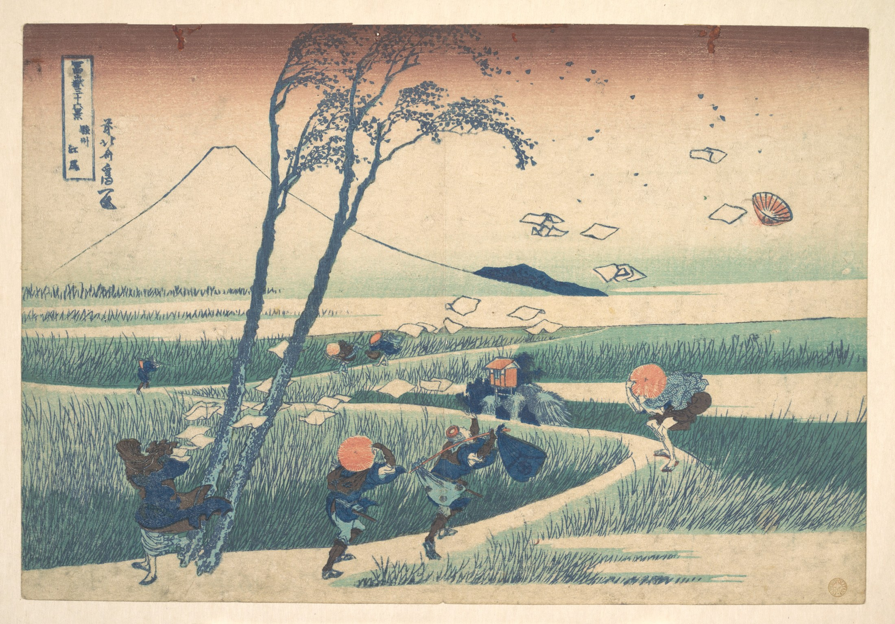
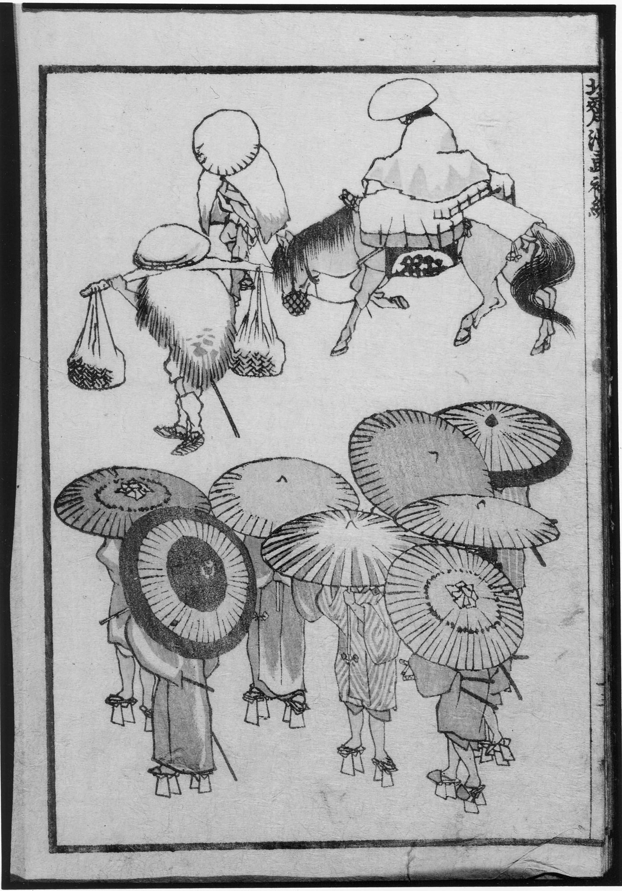
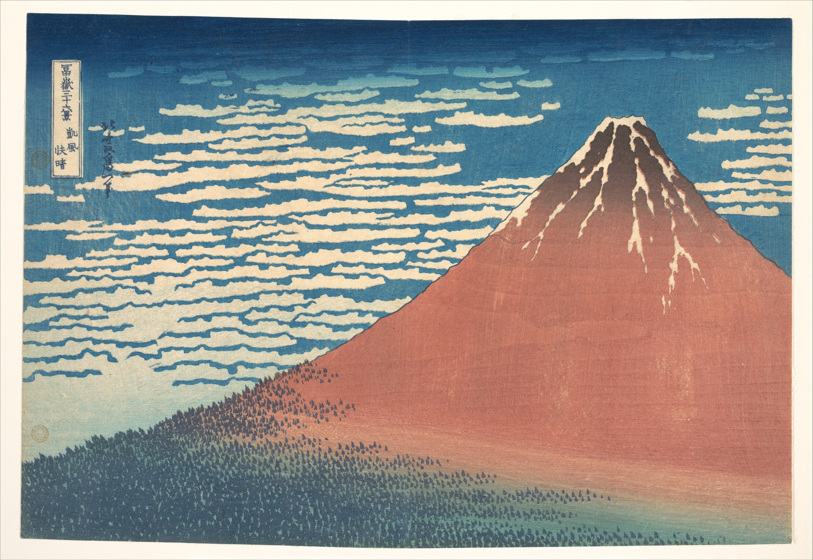

把山水與日常，帶到大眾眼前
浮世繪扎根於江戶城市的出版市場。北齋的富士連作，讓名山與旅人、職人、船夫同處一幅畫裡；風景既有壯闊，也有普通人的生活。[3]
OBUSE, JAPAN — 2026.11.02
從一次看展，走進一個人的宇宙。
一朵浪花、一座富士、一個平凡的背影。
他把江戶的日常，畫成世界藝術的新視野。
PROLOGUE / 先認識他
01 / A LIFE IN LINES
春朗、宗理、為一、畫狂老人卍……
不同的畫號，映照不同階段的探索。[1]
出生於今日東京墨田一帶。成長過程與借書、版木雕刻的世界相近，圖像與印刷很早就進入他的生活。
約1778年入勝川春章門下，以「春朗」發表役者繪等作品。1790年代離開勝川派後，持續吸收不同畫派與外來的空間表現。
把人物動作、動植物、器物與風景化為可學、可看的圖像庫。它是畫稿與畫法範本的集合，和今天以連續敘事為主的漫畫不同。
《冨嶽三十六景》以不同距離、天候與庶民活動呈現富士。大浪、赤富士與瀑布系列，展現晚年版畫的創造力。
1842年首次到訪小布施，在高井鴻山支持下作畫。1844至1845年完成祭屋台天井畫，1847年留下岩松院《鳳凰圖》。[2]
在江戶辭世。他對繪畫的追求一路延續到生命末期；《富士越龍》成為理解晚年精神世界的重要作品。
02 / FIVE WAYS OF SEEING
把館內展板讀成中文，
再用各類三幅典藏作品，對照理解。
以下按展板主題選圖；「水」是跨系列題材，其餘包含作品連作與人物類型。每類精選三幅，圖片均另取自網路上的美術館開放典藏。點圖可放大，展板譯文可展開閱讀。
THEME 01 / 3 WORKS
浪、海、河川與水氣，都是北齋長年研究的對象。先看三種不同的水，再讀他如何把流動變成線條。
原題：北斎の作品における「水」｜依委託者提供的北齋館展板照片翻譯，分段與標點依中文閱讀調整。
提到北齋筆下的「水」，許多人立刻就會想到錦繪《冨嶽三十六景・神奈川沖浪裏》。然而，這幅在他約七十歲時完成的經典，背後其實延續著自早期作品以來的深刻思考：如何掌握水的作用與運動，並以繪畫忠實表現其中充滿生命力的能量。
早在「春朗」時期（1778至1794年），北齋已把浪拍打岩石的題材帶入版畫，但當時還只是背景的裝飾。1797年的《江島春望》中，浪在構圖裡取得更重要的位置；他試著自然、忠實地描繪浪的動態，但水仍未完全成為主角。
其後，他透過嘗試西方畫法的風景版畫，以及供梳子、煙管設計使用的繪手本，加深對浪的探索。這份持續數十年的關注，最終匯聚成《神奈川沖浪裏》。
除了海浪，海、河、湖、瀑布與雨，也提供他研究構圖的豐富材料。波紋、漩渦、反射、透明感、閃光、水滴、飛沫和水蒸氣，在《北齋漫畫》等作品中呈現出各自不同的樣貌。
對「水」這種易變事物的細緻研究，也可與北齋所信仰的佛教「諸行無常」相聯繫。展板將1830至1834年間的《冨嶽三十六景》《諸國瀧廻》《諸國名橋奇覽》，視為這份探索的高峰。
到了最晚年，小布施祭屋台天井畫《男浪》與《女浪》以強烈漩渦呈現水的力量。展板認為，這是北齋將水的能量與生命力提升到精神層次的表現，也展現其長年探索的極致。
展板解說中包含多種推測性詮釋；以下予以標明，並補充事件先後。
《神奈川沖浪裏》是北齋約1831年為《冨嶽三十六景》製作的作品，也是其代表作之一。展板記載，實際發行總數仍不清楚；今日約有一百幅北齋生前印製的早期印本存世。展板並記載，1842年時售價為十六文，約相當於當時兩碗蕎麥麵的價格。這些是展板採用的估計與比較。
畫面看似簡單：輕巧的押送船把魚貨從伊豆、房總一帶運往江戶灣市場，正面對彷彿要將它們吞沒的大浪，遠方則是積雪的富士山。強烈動態的前景與寧靜背景形成對照；人的脆弱與渺小，也襯托出富士不動的存在感。
展板接著提出多種可能的解讀：大浪會不會象徵時代的不安，或對未知世界的預感？它是守護日本的屏障，還是帶有危險的新地平線？也可能與初鰹上市的吉兆和希望有關。這些都是展板提出的詮釋，不能視為已證實的創作意圖。
展板談到十九世紀前半日本面對外來壓力，並回顧1853、1854年的黑船來航。閱讀時應留意，這些事件發生在作品問世之後，也晚於北齋1849年辭世，因此不是北齋親見事件的畫面紀錄。
更直接可見的是文化的交融：日本的審美表現，結合進口合成顏料普魯士藍，以及線性透視等外來方法。展板認為，這份融合使作品超越時代與國界，成為如《蒙娜麗莎》或《創造亞當》般廣為人知的世界圖像。
THEME 02 / 3 WORKS
同一座富士山，可以是主角、背景，也可以只是天地間的一道輪廓。這裡選三幅，讀出晴、雨與風。
原題：冨嶽三十六景｜依委託者提供的北齋館展板照片翻譯，分段與標點依中文閱讀調整。
北齋開始創作代表作《冨嶽三十六景》連作時，已約七十歲。展板指出，「三十六」之名與十一世紀編成、收錄三十六位歌人作品的和歌集《三十六人撰》相呼應。不過，這套以日本聖山富士為主題的作品，最後共有四十六圖。
依展板採用的編年說法，1830年先發表十幅藍摺版畫，1831年再出十幅，1832年追加十六幅，完成原定三十六景。由於銷售成功，版元西村屋與八在1833年再追加十幅，通稱「裏富士」，並重印最初的系列。
隨著作品持續受到歡迎，北齋在世時已有多次印行。展板記載，各圖約有四至五次印行，其中《神奈川沖浪裏》達七次以上。
展板末尾特別註明「有多種說法」；因此，上述分年出版及印行次數應視為展板採用的一種研究說法，而非所有館藏一致的定論。本頁選圖年代另依各典藏本標示。
THEME 03 / 3 WORKS
橋既是交通設施，也是可以重新安排風景的幾何結構。三座名橋，分別展現連拱、圓弧與長斜線。
原題：諸国名橋奇覧｜依委託者提供的北齋館展板照片翻譯，分段與標點依中文閱讀調整。
1830年代是北齋創作的重要轉折期，他在這段時間推出《冨嶽三十六景》《諸國瀧廻》以及《諸國名橋奇覽》三套傑出的系列。《諸國名橋奇覽》由十一幅橫向大判版畫組成。
系列不僅描繪周防國錦帶橋（今山口縣）等真實存在的著名橋梁，也包含北齋想像中的橋。
他超越傳統「名所繪」對景點的描寫框架，大膽重組風景。對橋梁結構與形態的獨特好奇心，使他創造出極富原創性的構圖。
THEME 04 / 3 WORKS
美人畫呈現衣飾、工作與生活姿態；役者繪則讓歌舞伎舞台走進印刷圖像。以下三幅均為北齋作品，涵蓋肉筆畫、素描與版畫。
原題：江戸時代の美人と役者たち｜依委託者提供的北齋館展板照片翻譯，分段與標點依中文閱讀調整。
描繪女性之美，是浮世繪師喜愛的題材之一。其淵源可追溯到原先主要由武家、公家等上層人士欣賞的繪卷與屏風，例如取材自紫式部於十一世紀初寫成的《源氏物語》，描繪平安宮廷女性的繪卷。
到了十七世紀寬永、寬文年間，美人畫的對象不只遊女，也擴及農婦、町人女子與織工等人物。這些作品反映江戶與大坂城市中，町人和商人階層的興起。描繪歌舞伎演員的役者繪、相撲力士、武者與花鳥，也都是浮世繪常見題材。展板並以北齋與廣重，說明風景版畫後來的重要發展。
不同畫家逐步塑造出新的美感理想。菱川師宣的肉筆畫《見返美人圖》是著名例子；其後還有懷月堂安度描繪華服遊女，鈴木春信透過日常女性形象與多色版畫帶來新意，鳥居清長延續錦繪的發展。
喜多川歌麿則以「大首繪」等形式成為美人畫的重要代表。他讓人物既有理想化的美，也保有人情，描繪江戶吉原中知名的遊女與藝者。
這類圖像的魅力不只在女性外貌，也在於它們記錄了服裝、織物、髮型與化妝流行。在幕府嚴密管制的社會裡，時尚仍不斷變動；作品也呈現江戶特有的「粹」之美感。
北齋同樣創作優秀的美人畫，關注武家與貴族之妻、商人妻子、遊女、茶屋侍者及一般庶民女性等不同階層。至於役者繪，他承接早年老師勝川春章的路線，回應民眾對歌舞伎的熱愛。對當時城市居民而言，劇場是重要娛樂場所，而歌舞伎演員就如同時代偶像。
THEME 05 / 3 WORKS
以三座瀑布，認識圓形水口、分岔水線與垂直落水。水不只是被畫下來，更成了構成畫面的力量。
原題：諸国瀧廻｜依委託者提供的北齋館展板照片翻譯，分段與標點依中文閱讀調整。
《諸國瀧廻》由八幅直向大判版畫組成。題材既有《美濃國養老瀑布》（今岐阜縣）這樣的知名勝景，也有較少人熟悉的瀑布。
北齋的目的不只是記錄或再現某個地點。他關注水垂直落下的樣貌、撞上岩石時的變化、沿岩面滑落的形態，以及化為霞霧升起的飛沫。為了完整描繪流動的水，他投入各種繪畫技法。
瀑布是日本藝術常見的題材，這類作品看來清涼，過去也常在夏季掛起欣賞，為室內帶來涼意。
但北齋的挑戰超越了視覺上的清涼：他深入探索奔流所具有的生命力，以及水本身創造出的動態形體。
版畫的年代、色澤與保存狀態會因典藏本而異。本頁日期依所用館藏記錄標示；《諸國名橋奇覽》的部分館藏編年為約1830年，與其他研究常見的約1834年有所差異。譯文中的系列出版敘述與個別館藏編年分開呈現。
LOOK CLOSER / 看畫練習
切換三個觀察角度，看看同一幅畫如何同時容納力量、勞動與寧靜。
捲起的浪頭被清晰輪廓切成細密的白色浪花。巨大的弧線把視線帶向中央，也把小船包圍起來。
03 / IN JAPANESE CULTURE
北齋的力量，橫跨繪畫、出版與工藝。
他讓圖像在不同讀者與媒介之間流動。

04 / ACROSS THE SEA
19世紀後半，日本版畫與繪本流入歐洲。
「日本主義」帶來的，是觀看與創作方法的更新。[7]
COMPOSITION / 構圖
斜向動線、非對稱安排與意外的截景，提供了不同於單一中心構圖的選擇。風景可以從近處物件之間被看見，也可以讓大片空間參與畫面。
看莫內：2017年「北齋與日本主義」展，將北齋《竹林之不二》與莫內《木間的春天》並置，討論近景枝幹與遠景的關係。這是有研究脈絡的比較，並不等於每幅作品都直接臨摹北齋。[7]

GESTURE / 身體
彎腰、回身、伸手與勞動的姿態，讓身體擺脫端正肖像的限制。《北齋漫畫》把這些動作變成易於翻閱、傳播的視覺資源。
看竇加與卡莎特：同一展覽透過作品對照，討論他們如何吸收《北齋漫畫》的自然人物表現。影響可以是姿態、視角與節奏，不一定是挪用同一個人物。[7]

DESIGN / 平面語言
清楚的輪廓、大色塊與簡化形體，使圖像跨越繪畫、版畫與裝飾設計。《北齋漫畫》也成為西方藝術家與設計者的重要參照。
看更遠的迴響：波士頓美術館以北齋作品與歐美藝術、當代創作並置，追蹤其圖像如何被重新演繹。這份影響延續到今天的設計與大眾視覺文化。[8][9]
VAN GOGH / 書信裡的北齋
梵谷對北齋的欣賞，有書信為證。1888年9月8日，他在寫給弟弟西奧的信中，稱讚北齋能以線條與素描引起強烈情緒，並回應西奧把海浪比作「爪子」、形容船被困在其中的說法。[10]
書信編者將這段話與北齋《神奈川沖浪裏》等浪景作品聯繫起來。信中談的是線條的表現力；不能僅憑這段文字，就認定梵谷的某幅畫直接臨摹了《大浪》。
北齋與廣重，證據各有不同：梵谷留下了讚賞北齋的文字；對廣重則有明確的油畫臨摹實例，包括1887年的《雨中橋（仿廣重）》與《開花的梅園（仿廣重）》。這些關係一起說明，浮世繪如何成為梵谷探索構圖、線條與色彩的重要資源。[11]
閱讀1888年9月8日書信（第676封）↗READING ROOM / 資料與圖像
展板翻譯來源：委託者2026年11月2日於小布施北齋館拍攝的解說牌。照片僅作翻譯參考，不在本網站展示。
資料查核日期：2026年11月2日。文字為繁體中文導讀與看畫分析；涉及藝術影響時，依館方研究與策展比較說明，不把視覺相似自動當作直接因果。
生平階段、畫號與創作媒介。
高井鴻山、晚年造訪與天井畫年代。
出版背景、錦繪與製作分工。
普魯士藍、靛藍與重複印刷的科學分析。
繪手本用途、十五編與身後出版。
讀本插畫、為一期版畫與晚年肉筆畫。
莫內、竇加、卡莎特等藝術家的策展對照。
日本與西方、歷史與當代之間的傳承。
《北齋漫畫》在西方藝術與設計中的傳播。
1888年9月8日致西奧：北齋線條的情感力量；附編者的浪景作品考證。
《雨中橋》《開花的梅園》與廣重原作的直接對照。
本頁十五件分類展品與一件《北齋漫畫》參考圖像由 The Metropolitan Museum of Art 的 Open Access 資源下載，館方標示 Public Domain，依 CC0 開放。全圖可點擊放大，文字導讀為本頁另寫；首頁與分享圖使用《神奈川沖浪裏》，分享圖另作版面裁切。網頁不刊登現場照片。展板中譯依委託者提供的照片整理；若原文包含藝術詮釋或編年爭議，另予標明。開放取用政策 ↗